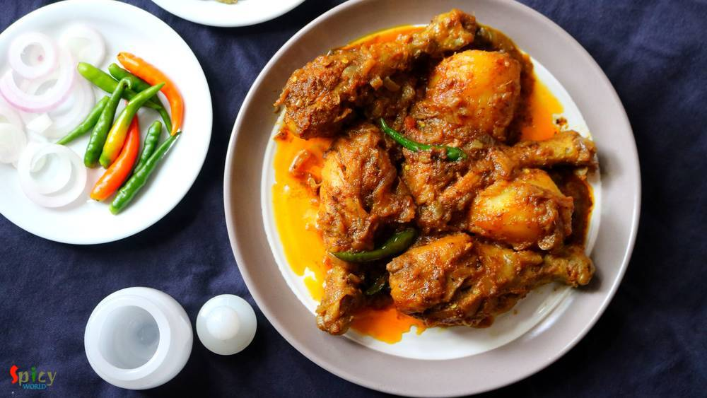

Simple and Easy Recipes
Chicken Kosha / Kosha Murgir Mangsho
© 2016 Spicy World, Published on: Jul 5, 2018
In Bengal, one of the common non-veg curry is 'chicken kosha'. I think everybody is familiar with this name. Kosha / Bhuna is a process where you have to cook the meat with spices on medium - low flame in its own juices, if it gets dry then only add water as less as possible. It requires time but with chicken you can make it within an hour. One can make the same curry with mutton, potato, egg etc. They all tastes really delicious. I maintained the recipe very simple and easy. Try this in your kitchen and let me know how it turned out for you.

Ingredients
- 500 gms of chicken.
- 2 medium onion, sliced.
- 1 Tablespoon of ginger and garlic paste.
- 1 tomato, chopped.
- 6 green chilies.
- 2 Tablespoons of lemon juice.
- Spice powder (2 Teaspoons of Turmeric powder, 1 Teaspoon of red chili powder, 1 Teaspoon of kashmiri chili powder, 1 Tablespoon of roasted cumin and coriander powder)
- Salt and sugar.
- 1/2 cup of Mustard oil.
- 1 potato, cut into 4 chunks.
- Whole spices (1 bay leaf, 3 green cardamom, 3 cloves, 1 small cinnamon stick, pinch of cumin seeds).
- 1/4th cup of hot water.
- Pinch of garam masala powder.

Steps
Marinate the washed chicken with a Teaspoon of salt, ginger garlic paste, turmeric powder, red chili powder, lemon juice and 1 Tablespoon of mustard oil. Mix well and keep it in the refrigerator for 2 hours.
Heat mustard oil in a kadai / pan.
Fry the potatoes for 5 minutes, then take them out from oil.
Now in the remaining oil add all of the whole spices. Saute for few seconds.
Then add onion slices and fry until golden in color.
Add the marinated chicken and stir fry them on high heat for 5 minutes.
Then add tomatoes and cook for 2 minutes.
Time to add all of the remaining spice powder and some more salt. Mix well for 10 minutes on medium flame.
Cover the pan and cook for 15 minutes.
Then add 4 green chilies and fried potatoes. Mix well for 2 minutes.
Add the hot water and pinch of sugar. Mix well and cook until everything becomes soft.
Lastly add 2 slitted green chilies and garam masala powder. Mix well and turn off the heat.
Your chicken kosha is ready.
Serve this with hot plain rice, pulao, naan or roti.
")